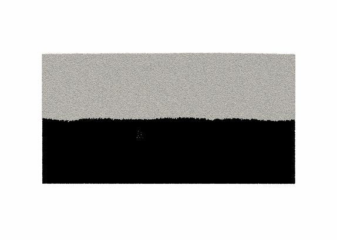

刘蒙 Liu Meng
░ Fingering instability in binary granular system
The interface morphology in binary granular system (vibration+gas flow) is similar to the so called Rayleigh-Taylor(RT) instability in
classical fluids. 
Does the growh rate of wavenumbers can be predicted by RT theory?
Is the RT like fingering sensitive to the particle properties?
What's the yield criterion for the fingering instability?
Please check it out by clicking the title.☝